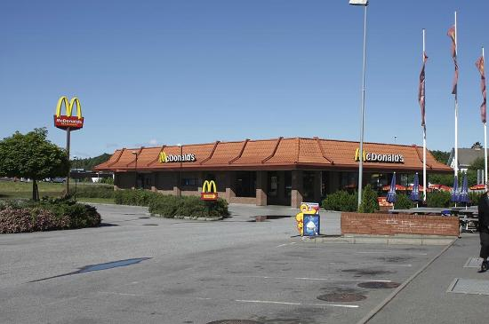
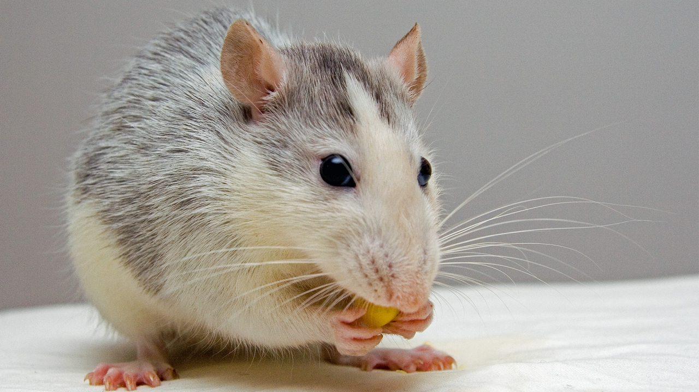

Alt begynnte når Rottene var leie av å alltid bli sparket ut av McDonalds. De vill også ha big macs.
McDonaldsen som først ble overtatt av rottene.
De protesterte i årevis, uten noen utvikling. Derfor valgte de å ta handling i sine egene hender.
De valgte å invadere McDonaldsen i Sarpsborg. Inasjonen som var ledet av Rottegeneral Whiskers var en sukksess og situasjonen utfolder seg fortsatt. Det er usikkert om hva som skommer til å skje.
Bilde av Rottegeneral Whiskers.